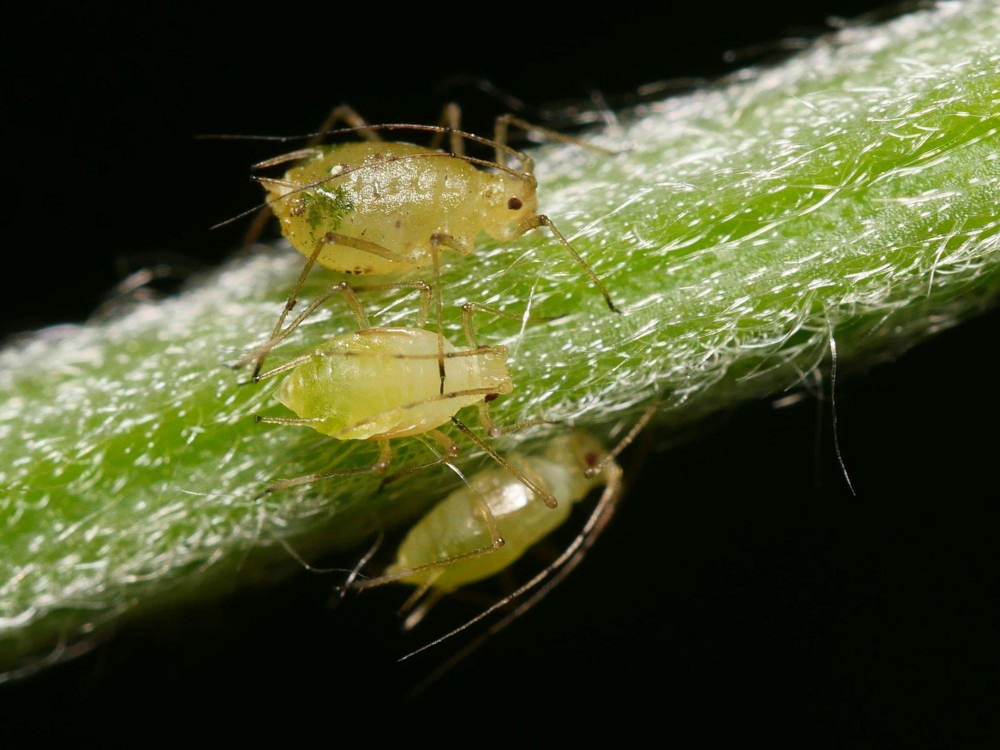

← Toutes les fiches · Ravageur · insecte
Myzus persicae, Aulacorthum solani, Aphis gossypii, Macrosiphum euphorbiae

Petits insectes de 2 à 3 mm, à corps mou, avec de longues pattes et de longues antennes. Deux tubes, les cornicules, dépassent à l'arrière du corps. La couleur va du noir au gris, au rouge, au jaune et au vert selon l'espèce. Les adultes sont surtout aptères; des ailés apparaissent quand la population devient dense. En serre, tous les individus sont des femelles qui donnent naissance à des jeunes vivants; ceux-ci se reproduisent à leur tour après 7 à 10 jours, et une femelle peut produire 60 à 100 jeunes en 20 jours.
La reproduction est continue en serre et les populations montent très vite. Les ailés se forment à forte densité et servent à la dispersion, dans la serre ou depuis l'extérieur. La Publication 370 ne donne pas de seuil de température ou d'humidité pour les pucerons.
Pièges collants jaunes pour les ailés. Pour les aptères, inspecter le jeune feuillage avec soin et régulièrement. Méthode du cours : pièges pour les ailés; chercher le miellat, les fourmis et les exuvies.
Nombreuses cultures de serre. Les quatre espèces citées sont les plus courantes en Ontario; en 2014, le puceron vert du pêcher et le puceron de la digitale dominaient.
Certains pucerons transmettent des virus, par exemple la mosaïque du concombre.
Fiche du guide Parcelle, version 2026-11-15b. Aucune recommandation de traitement. Les publications de l'Ontario sont écrites pour l'Ontario.